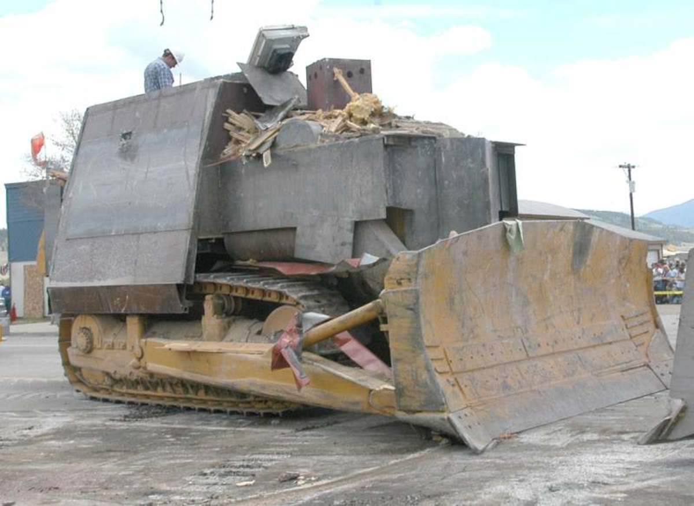
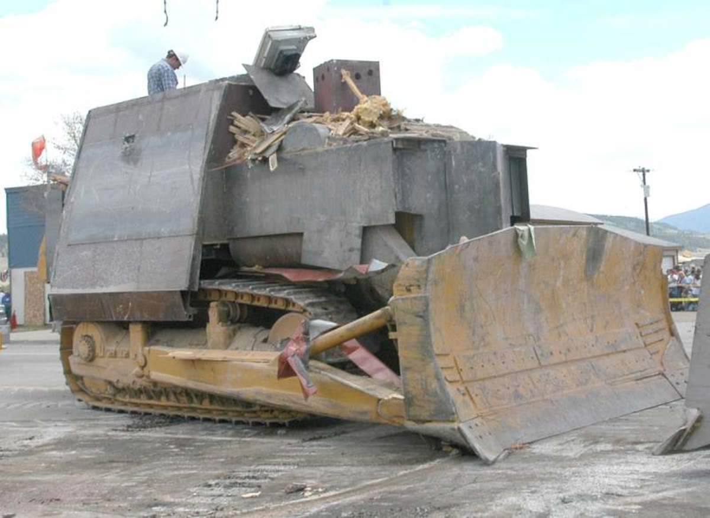
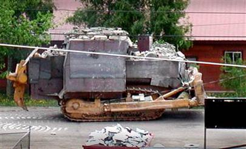
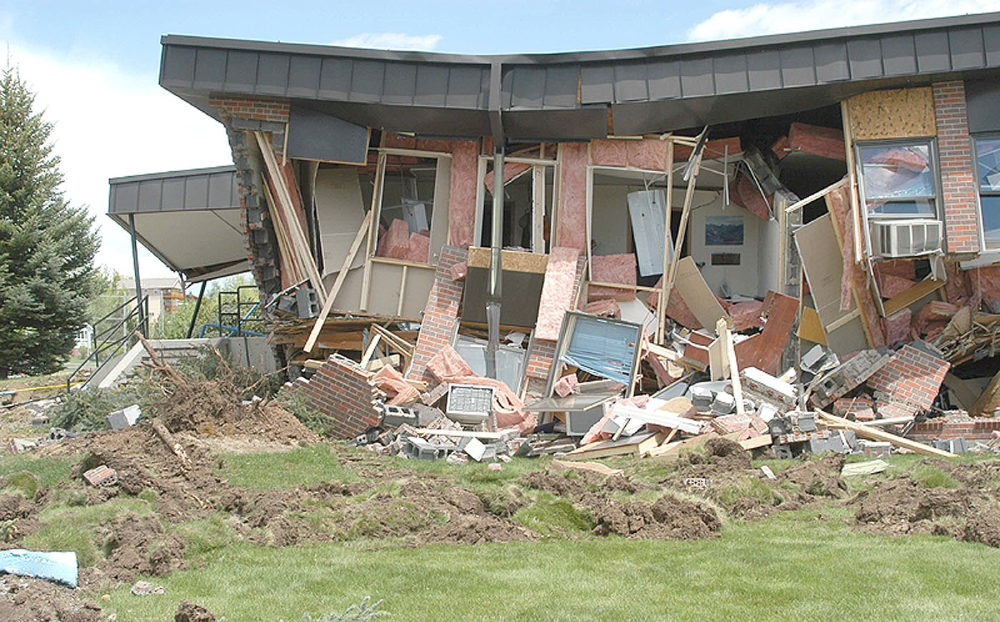

Marvin John Heemeyer (October 28, 1951 – June 4, 2004) was an American automobile muffler repair shop owner who demolished numerous buildings with a modified bulldozer in Granby, Colorado, in 2004.
Heemeyer had various grudges against Granby town officials, neighbors of his muffler shop, the local press, and various other citizens of Granby. Over about eighteen months, Heemeyer secretly armored a Komatsu D355A bulldozer with layers of steel and concrete.
On Friday, June 4, 2004, Heemeyer used the bulldozer to demolish the Granby town hall, the house of a former mayor, and several other buildings. He killed himself after the bulldozer became stuck in a hardware store he was destroying. No one else was injured or killed,[1] in part due to timely evacuation orders.[2]
News footage of the events:
Marvin Heemeyer was born on October 28, 1951, on a dairy farm in South Dakota. In 1974, he moved to Colorado because he was stationed at Lowry Air Force Base. In 1989, he moved to Grand Lake, Colorado, about 16 miles (26 km) away from Granby. His friends said that he had no relatives in the Granby–Grand Lake area.[3]
Heemeyer was strongly in favor of gambling legalization and campaigned for the cause on several occasions. At one point, he began disseminating a newspaper of his own on the issue, as he believed the local newspapers were biased against this cause. In 1994, a measure was proposed that would have legalized gambling in Grand Lake. Heemeyer was an avid supporter of the proposal, and so passionate about the cause that he nearly came to blows with a local reporter who was opposed to the proposal.
In November 2000, Heemeyer filed a lawsuit to block a project constructing a concrete plant next to his muffler store. By January 9, 2001, Heemeyer had lost most of his allies in opposition to the concrete plant, and city officials almost unanimously approved its construction. On January 9, 2001, the preliminary plans for the plant were approved near-unanimously, only Heemeyer remained opposed. This made the final approval by Granby's zoning commission and trustees in April a formality.
In June 2001, Joe Docheff made Heemeyer an offer whereby if Heemeyer dropped the lawsuit, they would provide him an easement to connect a sewer line to the new concrete plant free of charge; Heemeyer just hung up. Around this time, the buried concrete truck barrel that served as Heemeyer's sewage hole filled up. Heemeyer responded by pumping his sewage with a gasoline pump into the irrigation ditch that ran behind his property. Heemeyer also attempted to illegally connect to a neighbor's sewer line, but was caught and the incident reported to the sanitation district. At this point, the sewer district started enforcing the legal requirement to have a sewer hookup or a septic tank and fined Heemeyer $2,500 for it and other city code violations at his business,[4] in July 2001, nine years after he was required to have installed either.[12][8] Heemeyer was found in contempt of town code in November 2001 by the municipal court, and required to fix the connection issues before he could inhabit or use the property for business purposes again, as well as remove the truck barrel before July 2003. Heemeyer agreed before later that day rejecting it, and describing the requirements as a "form of terrorism". An attorney at the judgment reported Heemeyer muttering, "I'm just gonna bulldozer this whole place to the ground."
After the lawsuit against the town was dismissed in April 2002, Heemeyer blamed the failure on his lawyer and demanded a refund. Knowing the zoning decision was now final, he traveled to California, bought a Komatsu D355A bulldozer in an auction for $16,000, and had it shipped to Granby in July 2002. He kept it outside of his business with a "For Sale" sign on it and tried to auction it, but few paid it any mind. In October 2002, he announced the closure of the muffler repair business, putting almost all of the inventory up for sale. When the bulldozer failed to sell, he saw it as a sign from God that he had to start his mission.
He erected a wall to separate his space from the rest of the building and changed the locks. While no one in Granby saw him, he worked on the bulldozer, illegally constructing living quarters to avoid having to return to his home in Grand Lake, which he saw as a waste of time that could be spent on the dozer. "It is interesting to observe that I was never caught", Heemeyer wrote. "This was a part-time project over a 1½ year time period." He was surprised that several men, who had visited the shed late the previous year, had not noticed the modified bulldozer "especially with the 2,000-pound [910 kg] lift fully exposed ... somehow their vision was clouded".
During this period, Heemeyer repeatedly mentioned the bulldozer to friends and associates, as well as his intention to use it for destructive purposes
On June 4, 2004, starting at around 2:15 PM, Heemeyer began his rampage by driving his armored bulldozer through Mountain Park Concrete, owned by the Docheff family.Several employees attempted to stop the bulldozer, by cramming objects into the treads in order to jam it, to no effect. A deputy from the sheriff's office arrived on the scene, followed by a Colorado State Patrol trooper, who was fired upon by Heemeyer. More sheriffs arrived, and began firing on the dozer, attempting to destroy the cameras with gunfire, but were unable to penetrate the 3-inch (7.6 cm) bulletproof plastic. At one point, Heemeyer charged at a firing position occupied by several state troopers, who evacuated mere seconds before he demolished it, with one eyewitness noting that had they taken any longer they would have been killed.
After the concrete plant, Heemeyer turned onto Agate Avenue and headed south toward town at approximately 5 mph (8.0 km/h). The officers at the plant requested a reverse 911 call be made to all residents, in order to initiate evacuations. Undersheriff Glenn Trainer climbed atop the bulldozer and rode it "like a bronc buster, trying to figure out a way to get a bullet inside the dragon". He also dropped a flash-bang grenade down the bulldozer's exhaust pipe, with no apparent effect, and was later forced to jump down to avoid debris.
Heemeyer then advanced on Granby Town Hall, which had been hosting a story hour for children in its library when the rampage began. All occupants were only evacuated moments before Heemeyer reached the building, an hour after the rampage began. Heemeyer turned to the Liberty Savings Bank, where he aimed at the corner office where a woman who was a part of the zoning board worked.
At this point, local authorities and the Colorado State Patrol feared they were running out of options in terms of firepower, as the approximately 200 rounds fired by police had been ineffective up to that point, and that Heemeyer would soon turn against civilians in Granby. Governor Bill Owens allegedly considered authorizing the Colorado National Guard to use either an Apache attack helicopter equipped with a Hellfire missile or a two-man fire team equipped with a Javelin anti-tank missile to destroy the bulldozer. As late as 2011, Governor Owens's staff vehemently denied considering such a course of action. Members of the State Patrol, however, claim that to the contrary, the governor did consider authorizing an attack, but ultimately decided against it due to the potential collateral damage of a missile strike in the heart of Granby being significantly higher than what Heemeyer could have caused with his bulldozer.
Heemeyer finally attacked the Gambles Store, targeting it due to the owner's involvement in the hearings about the batch plant. As the bulldozer slowly ploughed through the building, one of the previous scrappers was maneuvered onto the sidewalk, blocking it from retreating, after which the operator fled to safety.[18] Unaware of a small basement on the property, Heemeyer dropped a tread into it as he continued through, immobilizing himself. The radiator had also been damaged, and the engine was leaking, before failing. As such, it was noted that even if Heemeyer had been able to free himself, the bulldozer would not have been able to operate much longer. About a minute later, at 16:30 MST, one of the SWAT team members, who had swarmed around the machine, reported hearing a single gunshot from inside the cab. It was later determined that Heemeyer had shot himself in the head with a .357-caliber handgun.